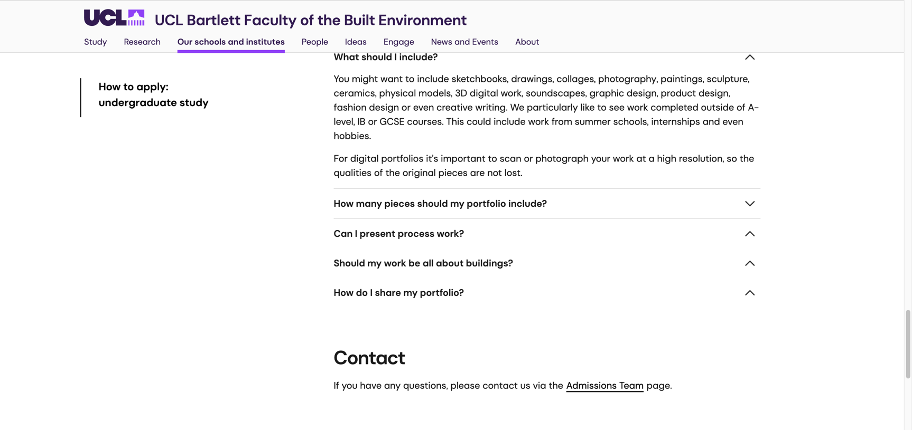
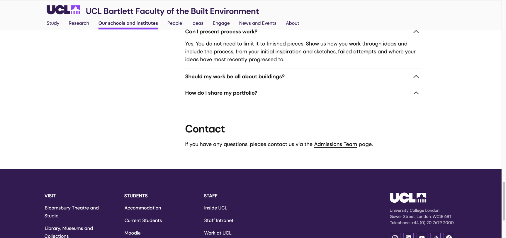

我搜索建筑留学作品集要求时，排在前面的中文文章很爱给一个稳妥区间，三至五个项目，二十至四十页，再配一套场地分析、平立剖和效果图。拿这套数字去看UCL Bartlett本科申请页面，会遇到一个很现实的问题。学校给数字作品集的上限只有十页，文件还不能超过5MB。
十页里当然能放多个项目，删什么最费判断。建筑学生手里往往有很多图。平面图能证明尺度控制，模型照片能展示空间，渲染图负责把结果说清。每一类都舍不得，页面很快就变成缩略图墙。评审看到了工作量，设计判断反而被压小了。
下面的十页组织方法只是编辑建议，UCL官方没有提供模板。官方能确认的是PDF最多十页、文件不超过5MB，以及学校欢迎过程稿和多种媒介。申请其他课程时要重新查页数。
先看清UCL现在写了什么
UCL Bartlett当前本科申请问答写得很具体。数字作品集可以包含多件作品，文件必须是PDF，最多十页，封面若加入则不计入十页。文件上限为5MB，作品集里不能嵌入网站或视频链接。

这个限制会直接影响叙事。十页作品集很难平均照顾四个完整项目。更可行的方式是让一个项目承担主要叙事，再用较短的项目证明材料感、观察能力或另一种空间兴趣。主次一旦明确，页数会好分很多。
建筑作品可以从建筑以外开始
UCL列出的材料范围很宽。素描、拼贴、摄影、绘画、雕塑、陶瓷、实体模型、数字三维作品都可以进入作品集，产品设计、服装和创意写作也在页面上。学校还提到课堂以外完成的作品，兴趣项目和实习材料都能提供信息。

申请建筑的人常担心作品不够建筑。评审更需要看到申请人怎样观察空间、材料和人。一次长期的街道摄影可以说明你注意到了什么，一组实体实验可以展示你怎样理解结构或光。把它们与建筑兴趣接起来，价值会比临时拼一个概念建筑更高。
著名建筑的临摹也能放，UCL建议申请人换一个独特角度。可以研究它的材料如何老化，人怎样经过和停留，或场地历史怎样影响今天的使用。只画出一个很像的立面，评审很难知道你的问题在哪里。
过程页要留下做决定的时刻
UCL明确允许过程稿。最初灵感、草图、失败尝试和最近的发展都能出现。过程页的任务很具体，它让评审看见一个想法怎样离开脑子，经过模型和测试，最后变成眼前的空间。

失败尝试不能单独负责真实感。放一张塌掉的模型照片，旁边写失败，信息还没完成。要继续说明哪一处关系不成立，你后来改了什么，新的方案解决了多少。变化很小也没关系，只要它确实来自这次测试。
过程图的选择也要克制。十张造型相近的草图属于一次发散，一张就能代表。两次方向完全不同的尝试更有信息，因为评审能看到申请人如何比较和放弃。
十页可以这样拆
下面是一种适合一主一辅结构的拆法。项目情况不同，页数可以移动。它的目的只有一个，让每一页完成一件事。
用最有辨识度的图建立第一印象，再用一句短说明交代项目研究的问题。
放真正改变设计方向的观察、场地信息和研究材料。常规分析可以缩小，关键发现要留出空间。
展示草图、实体模型和失败后的调整。让不同版本之间有可读的因果关系。
给最终空间足够尺寸，平面、剖面和模型照片按项目最需要证明的能力来选。
放一个短项目或个人实验，展示主项目没有覆盖的媒介和兴趣。
用第二个短项目收住作品集，也可以放一组观察或模型练习。不要再重复主项目的结论。
如果你有两个完成度接近的项目，可以各用四页，剩下两页交给观察、模型或个人实验。申请人的背景不同，重点也会变。跨专业学生可以多留一页说明方法怎样迁移，建筑本科在读的申请人则要让专业项目承担更多证据。
模型拍摄常常比再做一张渲染更值
UCL Bartlett学生Teni在学校博客里写过自己的作品集准备。她建议先列出可能使用的作品，再检查质量、种类、过程和个人特点。拍模型时可以用白卡或布搭一个简单背景，多试几个角度，光线要稳定。照片拍完以后再进入数字排版。
这套办法很普通，也很实用。实体模型拍得灰、背景杂乱，页面设计很难救回来。先清洁模型，找一块安静背景，固定机位和光线。拍全景以后补一张能说明空间关系的近景。最后只留下最能回答问题的照片。
排版时先看顺序，再看风格。一个项目从研究跳到最终渲染，后面又回到模型测试，读者会来回找线索。把页面缩成小图排在一起，很快能看出叙事在哪一页断了。
三种内容最容易挤掉判断
老师要求交的每一张图都放进来，作品集会像作业归档。申请只需要当前判断最有用的部分。
角度相近的渲染连续出现，页面数量增加，项目理解没有增加。
大段背景介绍会逼读者缩小页面。文字应当解释图里看不见的决定。
为了显得独特加入与其他材料没有关系的主题，评审很难判断它是否真的属于你。
十页的好处也在这里。它让申请人承认作品有主次。留下一张图意味着另一张图要走，编辑本身就在展示判断。
核对来源
- UCL Bartlett本科申请与作品集问答，访问于2026年8月25日
- UCL Bartlett学生Teni的作品集准备经验，访问于2026年8月25日